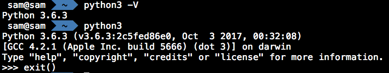

Virtual Environment¶
Step1, Install python3¶
- Method 1 (recommendation)
Go to Python Official Website<https://www.python.org/downloads/>, download and install a specific release.
- Method 2
Use HomeBrew, $ brew install python3
Make sure Python3 has been installed successfully, $ python3 -V
Step2, Install package virtualenvwrapper¶
- $ pip3 install virtualenvwrapper, http://virtualenvwrapper.readthedocs.io/en/latest/
- check the package location, $ pip3 show -f virtualenvwrapper
- setup the path for shell zsh

- create a new environment, $ mkvirtualenv env1
- show the existing environment, $ workon, or $ lsvirtualenv
- use an existing environment, or switch between environments, $ workon env1
- You must use deactivate before removing the current environment, $ deactivate
- remove an environment, $ rmvirtualenv env1